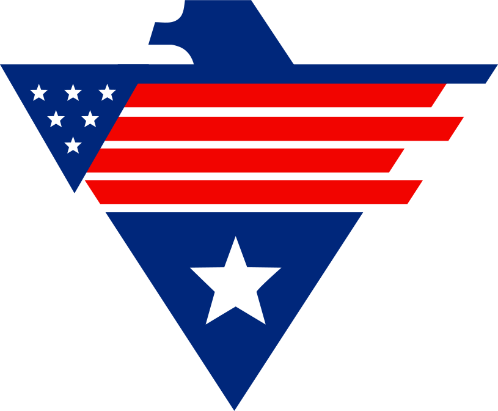

ENDURE BY FAITH
JOBS

ENDURE BY FAITH
JOB BOARD
About
Contact Us
ENDURE BY FAITH
Partners
Jobs
Focused
'Service Members one-stop shop for connecting Active Duty, Transitioning, and Veterans with the resources, guidance, and opportunities they need to thrive.'
Employment Opportunities
Programs that connect veterans with job opportunities and employers looking to hire military talent.
Employment Opportunities
Resume Assistance
Professional help in crafting military-to-civilian resumes that highlight transferable skills.
Resume Assistance
VA
VA Assistance
Resources to help veterans understand and apply for their VA benefits.
VA Assistance
Professional Branding
Training on how to leverage LinkedIn for networking and job searching.
Professional Branding
Professional Development
Programs that focus on personal growth, mindset, and leadership beyond the military.
Professional Development
Career Development
Career transition coaching, networking, and job placement support.
Career Development
Certification Training
Programs that provide technical training, certifications, and career advancement.
Certification Training
Real Estate
Resources to help veterans buy or refinance homes with VA loan benefits.
Real Estate
$
Financial Planning
Assistance with retirement planning, investments, and life insurance options for veterans.
Financial Planning
Educational Support
Programs designed to help veterans transition into higher education or skilled trades.
Educational Support
Internship Programs
DoD-approved programs that allow service members to intern with civilian companies before separation.
Internship Programs
Mentorship Guidance
One-on-one guidance from veteran mentors and career professionals.
Mentorship & Guidance
Business Support
Resources for veterans looking to start and grow their own businesses.
Business Support
Mental Health
Support for veterans and families dealing with PTSD, stress, and mental health challenges.
Mental Health
Veteran Network
Groups and organizations that foster camaraderie and support among veterans.
Veteran Network